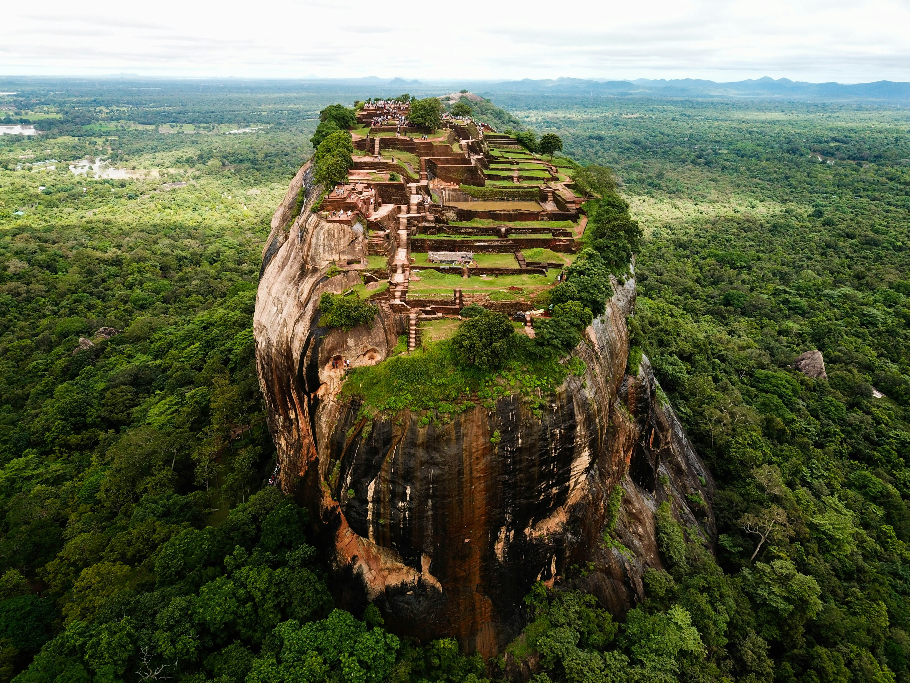

Discover Most-Visited Sri Lanka Tourist Places For Your 2024 Trip
Let's see the world with us with you and your family.



Welcome to Discover Sri Lanka, your go-to travel guide for exploring the pearl of the Indian Ocean! Our dedicated team provides up-to-date information, personalized itineraries, and insider tips to help you uncover the rich culture, stunning landscapes, and hidden gems of Sri Lanka. Whether you seek adventure, relaxation, or cultural experiences, let us be your trusted companion on your unforgettable journey through this incredible island nation.
Completed Trips
Tour Guides
Destinations
Let's see the world with us with you and your family.
A journal is a place to record new things you have discovered while exploring various places you visit.

Explore the most beautiful places in Sri Lanka.


We strive to respond to all inquiries within 24 hours, ensuring prompt and attentive service.
We are online now